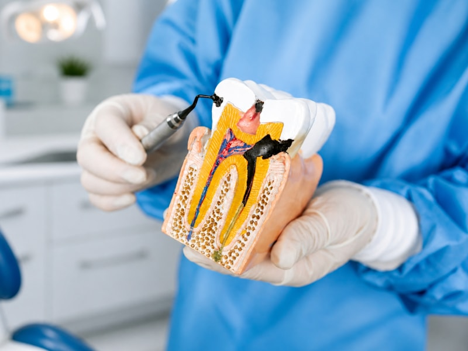
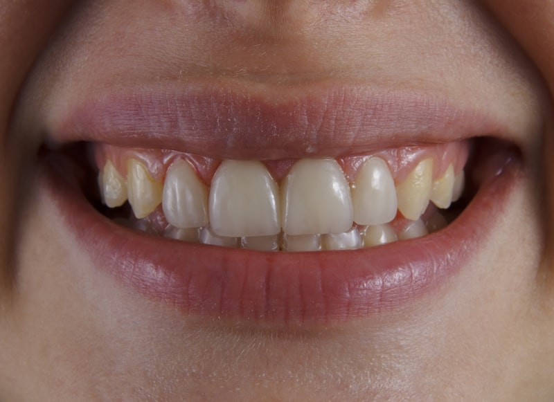
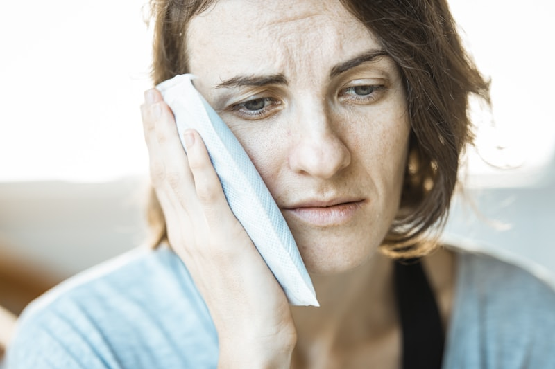
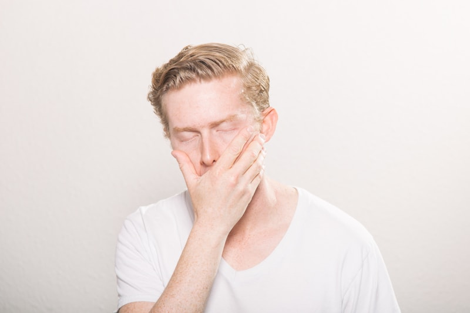
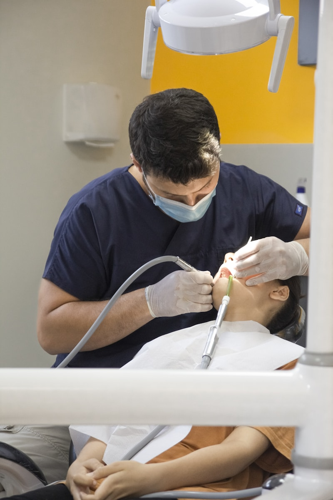

Ağız ve Diş Bakımı
Doğru ve düzenli ağız bakımı; diş çürüklerini, diş eti hastalıklarını ve ağız kokusunu önlemenin en etkili yoludur. Günde iki kez fırçalama, diş ipi kullanımı ve ağız gargarası temel bakım rutinini oluşturur.
Uzman Önerisi: Dişlerinizi en az 2 dakika, yumuşak kıllı fırça ile döngüsel hareketlerle fırçalayın. Diş ipi kullanımını günde bir kez ihmal etmeyin.
- Günde 2 kez, 2 dakika fırçalama
- Günde 1 kez diş ipi veya aradiş fırçası kullanımı
- Florürlü diş macunu tercihi
- 6 ayda bir profesyonel diş temizliği
- Yılda en az 2 kontrol muayenesi
Diş Sağlığı — Diş Çürükleri
Diş çürüğü, ağızda yaşayan bakterilerin şekerli besinleri asit üretmek için kullanması sonucu diş minesi ve dentinin hasar görmesiyle oluşur. Erken evrede belirti vermez, bu nedenle düzenli kontroller büyük önem taşır.
- Diş yüzeyinde beyaz, kahverengi veya siyah lekeler
- Sıcak-soğuğa hassasiyet ve tatlandırıcılara ağrı
- İleri evrede spontan ağrı ve şişlik
- Tedavi: dolgu, kanal veya çekim (evreve göre)
- Önlem: flor, fissür örtücü, düşük şeker tüketimi


Dişeti Sağlığı — Ağız Yarası
Dişeti iltihabı (gingivit) ve ilerlemiş periodontal hastalık, diş kaybının en önemli nedenlerinden biridir. Kanayan, şişen veya çekilen dişetleri bir uyarı işaretidir. Ağız yaraları (aft) ise stres, bağışıklık sorunları veya vitamin eksikliğiyle ilişkili olabilir.
Dikkat: Dişetleriniz fırçalarken kanıyorsa bu normal değildir. Erken tedavi ile periodontal hastalığın ilerlemesi durdurulabilir.
- Gingivit: kızarıklık, şişlik, fırçalarken kanama
- Periodontit: diş eti çekilmesi, diş sallantısı
- Tedavi: diştaşı temizliği, küretaj, cerrahi
- Aft tedavisi: lokal ilaç, lazer uygulaması
- İyileşmeyi destekleyen B12 ve C vitamini takviyeleri
Diş Kırıkları ve Yaralanmalar
Düşme, darbe veya sert besin ısırma sonucu oluşan diş kırıkları farklı seviyelerde gerçekleşebilir. Mine çatlağından kökü de kapsayan tam kırığa kadar her durumda en kısa sürede diş hekimine başvurulması önerilir.
- Mine çatlağı: genellikle ağrısız, estetik sorun
- Kuron kırığı: dolgu veya kaplama ile onarım
- Kök kırığı: kanal tedavisi veya çekim gerekebilir
- Dişin tamamen çıkması: 30 dakika içinde klinik başvurusu
- Çıkan diş sütun veya serum fizyolojik içinde taşınmalı


Hassas Dişler
Sıcak, soğuk, tatlı veya ekşi besinlerde hissedilen ani, keskin ağrı dentin hassasiyetinin belirtisidir. Aşınmış mine, geri çekilmiş dişetleri veya çatlak köklerin açığa çıkardığı dentin tübülleri bu hassasiyetin kaynağıdır.
Evde Önlem: Hassas dişler için formüle edilmiş diş macunlarını en az 4 hafta düzenli kullanın. Asitli içeceklerden sonra en az 30 dakika fırçalamayı bekleyin.
- Florür jel veya vernik uygulaması
- Dentin bonding ajan ile tübül kapatma
- Dişeti çekilmesinin tedavisi
- Gece plağı ile aşınmanın önlenmesi
- Hassas dişler için özel diş macunu kullanımı
Ağız Kokusu
Halitoz olarak da bilinen ağız kokusu; bakteriyel plak, diş çürükleri, diş eti hastalığı, dil kaplama ve sistemik hastalıklardan kaynaklanabilir. Sorunu geçici maskelemek yerine kökenine inmek kalıcı çözüm sağlar.
- Profesyonel diştaşı temizliği ve polisaj
- Dil kazıyıcı kullanımı ile dil yüzeyinin temizlenmesi
- Çürük ve iltihaplı dişlerin tedavisi
- Gargara ve florür uygulamaları
- Gerekirse dahiliye veya KBB yönlendirmesi


Ağız Kuruluğu
Tükürük bezlerinin yetersiz çalışması nedeniyle oluşan ağız kuruluğu (kserostomi); konuşmayı, çiğnemeyi ve yutmayı güçleştirir. Bazı ilaçlar, sistemik hastalıklar veya radyasyon tedavisi ağız kuruluğuna yol açabilir.
- Bol su tüketimi — günde en az 8 bardak
- Şekersiz sakız ile tükürük akışını uyarmak
- Yapay tükürük ürünleri kullanımı
- Alkollü gargara ve kafein tüketimini azaltmak
- Sistemik hastalık varsa ilgili uzman yönlendirmesi
Diş Gıcırdatma (Bruksizm)
Çoğunlukla uyku sırasında farkında olmadan gerçekleşen diş gıcırdatma ve sıkma, dişlerin aşınmasına, çenede ağrıya ve baş ağrısına yol açar. Stres ve anksiyete en önemli tetikleyiciler arasındadır.
Belirtiler: Sabah çene ağrısı veya baş ağrısı, dişlerin düzleşmesi ve kısalması, uyurken gıcırdatma sesi bruksizmin belirtisi olabilir.
- Gece plağı (okluzal splint) ile diş koruma
- Stres yönetimi ve rahatlama egzersizleri
- Çene kasları için Botoks uygulaması
- Aşınan dişlerin dolgu veya kaplama ile restorasyonu
- Uyku çalışması gerekebilir (uyku apnesi ilişkisi)


20 Yaş Dişleri
17–25 yaş arasında çıkan yirmilik dişler, çenede yeterli yer olmadığında gömülü kalabilir, eğik çıkabilir ya da kısmi sürerek ağrı ve enfeksiyona yol açabilir. Panoramik röntgen ile konumları değerlendirilir ve gerekirse cerrahi olarak çekilir.
- Panoramik röntgen ile konum değerlendirmesi
- Asemptomatik gömülü dişlerde takip stratejisi
- Sorun yaratan dişlerde cerrahi çekim
- İşlem sonrası ağrı yönetimi ve bakım önerileri
- Ortodontik tedaviyi etkileyebileceği için erken değerlendirme önerilir
Diş Tedavisi Korkusu
Dental anksiyete ve fobi, hastaların tedaviyi ertelemesine ve sorunların büyümesine neden olur. Kliniğimizde sabırlı, anlayışlı ve açıklayıcı bir yaklaşımla her hastanın kendini güvende hissetmesi önceliğimizdir.
Kliniğimizde: Tedavi öncesi süreçleri detaylıca açıklıyoruz. "Dur" işareti kurarak hastanın kontrolü elinde tutmasını sağlıyoruz.
- Tedavi öncesi ayrıntılı bilgilendirme
- Hastanın süreç üzerinde kontrol hissi
- Gelişmiş lokal anestezi — enjeksiyon ağrısı minimalize
- Çocuklar için oyun odaklı, ödüllü yaklaşım
- Gerekirse sedasyon yönlendirilmesi


Acil Durumlar
Ani şiddetli diş ağrısı, diş kırığı, diş düşmesi veya çenede şişlik gibi acil durumlarda vakit kaybetmemek büyük önem taşır. Kliniğimizi arayın — acil vakalarda en kısa sürede randevu oluşturuyoruz.
- Şiddetli ağrı: Hemen arayın, ağrı kesici ile bekleyin
- Diş düştüyse: Dişi sütun veya serum fizyolojik içinde taşıyın — 30 dk içinde gelin
- Kırık diş: Parçaları saklayın, dişi koruyun
- Çenede şişlik/ateş: Bekletmeden başvurun (apse riski)
- Tel veya plak kırıldı: Keskin uçları mumu ile kapatın
Sterilizasyon Kriterleri
Kliniğimizde hasta güvenliği en üst standartta tutulmaktadır. Tüm aletler kullanımdan önce otoklavda sterilize edilmekte, tek kullanımlık malzemeler her hastada yenilenmekte ve yüzey dezenfeksiyonu titizlikle uygulanmaktadır.
- Otoklavda 134°C buhar sterilizasyonu
- Enjektör, eldiven, maske — tek kullanımlık
- Ünit yüzeyleri her hasta sonrası dezenfeksiyon
- Su hatları periyodik temizlik ve biyofilm kontrolü
- Avrupa (EN 13060) standartlarına uygun sterilizasyon protokolü